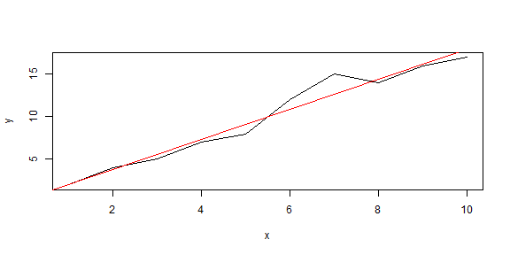

Did you ever wish you could run regressions without a bunch of code?
- Yes!
- Not really
If you are in this class, probably you want to run regressions...
The answer is yes. Even a little bit of code is a nuisance compared to having it done for you.
JPittard
Developing Data Products
Did you ever wish you could run regressions without a bunch of code?
If you are in this class, probably you want to run regressions...
The answer is yes. Even a little bit of code is a nuisance compared to having it done for you.
https://jpittard.shinyapps.io/shiny
On this page, input your comma-separated values, press Submit, and the application will display the following:
-Values
Granted, the code isn't that hard...
x <- c(1,2,3,4,5,6,7,8,9,10); y <- c(2,4,5,7,8,12,15,14,16,17)
plot(x, y, xlab = "x", ylab = "y", type = "l"); abline(lm(y~x), col="red")

. . but I did need something simple for the exercise.
Here is an example of some math. It doesn't have much to do with pitching my application, but it does show that I am learning!
$$\sqrt{\frac{1}{n}(x^2_1+x^2_2+...+x^2_n)}$$